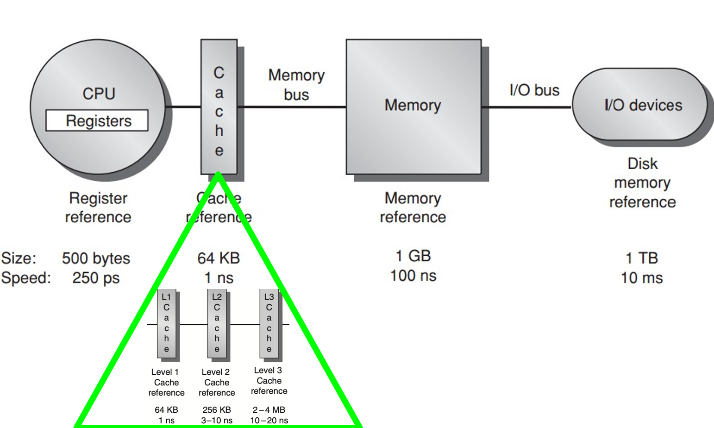
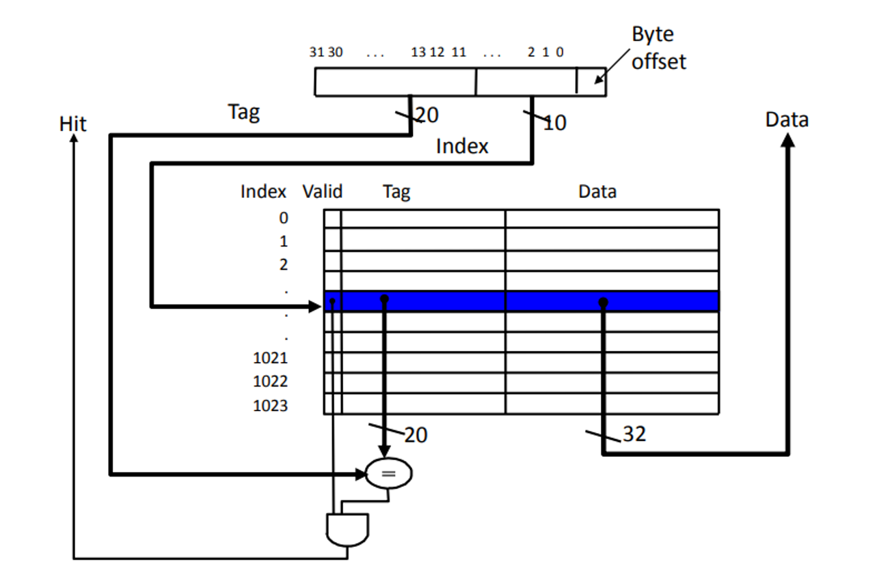
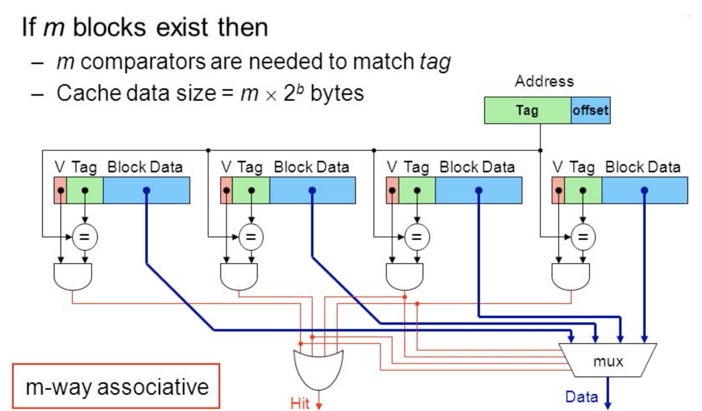
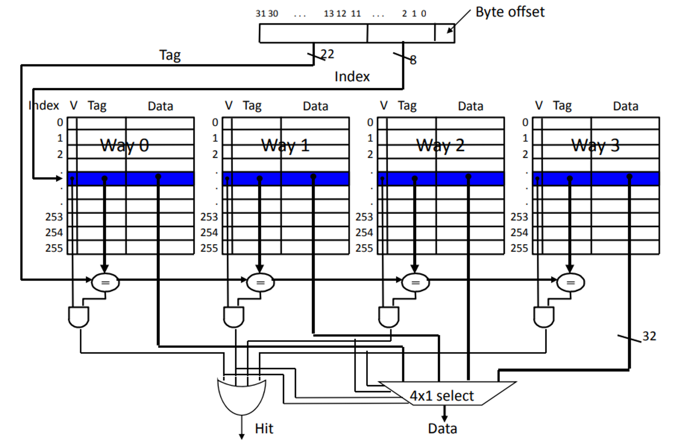
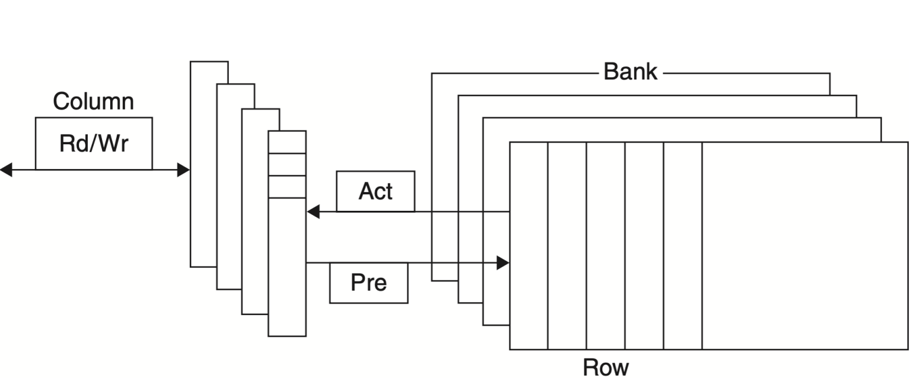

计算机体系结构2-2-1:层次结构的基础与缓存设计
导言：为什么我们需要“层次”？
我们先来思考一个根本性的设计问题：理想中的存储器应该是什么样的？很简单，它应该无限大、无限快，并且断电后数据永不丢失。然而，现实世界不存在这样的“神仙”器件。物理定律和经济规律告诉我们：
- 速度越快的存储技术（如SRAM），单位比特的成本越高，集成密度越低。
- 成本越低、密度越高的技术（如DRAM、磁盘），速度越慢。
面对这个无法调和的矛盾，计算机先驱们没有选择“非黑即白”，而是天才地提出了一种“妥协”的艺术——构建一个层次化的结构。

这个金字塔结构的设计哲学是：
- 顶层放置最快、最小、最贵的存储器（寄存器、缓存），供CPU直接、高频地访问。
- 底层放置最慢、最大、最便宜的存储器（主存、磁盘），用于存放海量的程序和数据。
- 通过在相邻层次间自动地、透明地复制数据，来营造一种**“整个存储空间既快又大”的假象**。
这个“假象”之所以能够成功，完全依赖于我们在第一讲中提到的局部性原理 (Principle of Locality)。正是因为程序访问数据在时间和空间上都高度聚集，我们才可以用小的高速缓存来服务绝大部分的内存请求。
这张层次结构图，不仅是性能的阶梯，也是整个计算机系统不同组件的分工图：
- 寄存器 <-> 缓存：由编译器和硬件共同管理。
- 缓存 <-> 主存：由硬件（缓存控制器）自动管理。
- 主存 <-> 磁盘：由操作系统（通过虚拟内存机制）管理。
第一部分：缓存的核心机制——四个基本问题
无论一个缓存系统多么复杂，其设计都必须回答四个最基本的问题。这四个问题构成了所有缓存设计的基础。
问题一：当一个数据块（Block）从内存加载进缓存时，可以放在哪里？ (Block Placement)
这决定了缓存的组织方式和相联度 (Associativity)。
-
直接映射 (Direct Mapped)
- 设计思想：最简单的策略。每个内存块只能被放置到缓存中的一个唯一的位置。
- 实现方式：位置由内存地址的低位（索引位 Index）决定。
Cache Index = (Memory Address / Block Size) % Number of Blocks in Cache。  - 优点：硬件实现极其简单、快速、廉价。查找时，只需根据地址索引到唯一的位置，比较一个Tag即可。
- 缺点：非常容易发生冲突缺失 (Conflict Miss)。如果程序交替访问两个映射到同一个缓存索引的内存块（例如
A[0]和A[1024]），它们会不断地将对方从缓存中“踢”出去，即使缓存中还有大量空闲空间。
-
全相联 (Fully Associative)
- 设计思想：最灵活的策略。一个内存块可以被放置到缓存中的任何位置。 
- 实现方式：查找时，需要将内存地址的Tag与缓存中所有的Tag并行比较。
- 优点：完全消除了冲突缺失，缓存空间利用率最高。
- 缺点：硬件实现极其复杂、昂贵、缓慢且耗电。需要大量的并行比较器。因此，只适用于非常小的缓存，如TLB（我们稍后会讲到）。
-
组相联 (Set Associative)
- 设计思想：在直接映射和全相联之间的完美妥协。将缓存分为多个“组”(Set)，每个内存块可以被放置到一个唯一组中的任何位置。一个N路组相联缓存，意味着每个组内有N个“路”(Way)可以存放数据块。
- 实现方式：
Cache Set Index = (Memory Address / Block Size) % Number of Sets in Cache。- 查找时，首先根据地址索引到唯一的组，然后将地址的Tag与该组内所有N个路的Tag并行比较。 
- 优点：在显著降低冲突缺失的同时，硬件复杂度远低于全相联（只需N个并行比较器）。这是现代CPU缓存最主流的设计。
- 特例：直接映射是“1路组相联”，全相联是“m路组相联”（m为缓存总块数）。
问题二：如何找到一个存放在缓存中的数据块？ (Block Identification)
- 地址的分解：当CPU发出一个内存地址时，缓存控制器会将其分解为三部分：
- 块内偏移 (Block Offset)：地址的最低位，用于在找到的缓存块中定位具体的字节。
Offset bits = log2(Block Size)。 - 索引 (Index)：地址的中间位，用于定位缓存中的具体“组”。
Index bits = log2(Number of Sets)。 - 标签 (Tag)：地址的最高位，用于与该组内所有路的Tag进行比较，以确认是否命中以及命中在哪一路。
Tag bits = Address bits - Index bits - Offset bits。
- 块内偏移 (Block Offset)：地址的最低位，用于在找到的缓存块中定位具体的字节。
- 查找过程：
- 用
Index位找到对应的组。 - 并行读取该组所有路的
Valid位和Tag。 - 将地址中的
Tag与该组中所有Valid为1的Tag进行比较。 - 如果有任何一个匹配，则缓存命中 (Cache Hit)。多路选择器根据匹配的路，选择对应的数据块，并结合
Offset位将数据返回给CPU。 - 如果没有任何一个匹配，则缓存缺失 (Cache Miss)。
- 用
问题三：当发生缓存缺失时，如果组已满，需要替换哪个块？ (Block Replacement)
- 设计挑战：对于组相联和全相联缓存，当一个新块需要载入但其对应的组已满时，必须选择一个“牺牲者”(victim)将其替换出去。
- 常用策略：
- 随机 (Random)：随机选择一个块进行替换。实现简单，但性能不稳定。
- 最近最少使用 (Least Recently Used, LRU)：替换掉最长时间未被访问过的块。这个策略基于时间局部性原理，通常性能最好。但真正的LRU实现起来非常复杂，需要为每个组维护一个访问顺序的硬件状态。
- 伪LRU (Pseudo-LRU)：许多硬件采用LRU的简化或近似算法，以在性能和硬件成本之间取得平衡。
问题四：写操作（Write）如何处理？
-
设计挑战：写操作比读操作更复杂，因为它需要最终修改内存中的数据。
-
策略一：写命中 (Write Hit) 时怎么办？
- 写穿 (Write-Through)：数据同时写入缓存和下一级存储（如主存）。
- 优点：实现简单，缓存和主存始终保持一致。
- 缺点：每次写操作都要访问慢速的主存，严重拖慢了写性能，并占用了大量内存带宽。通常会配合写缓冲 (Write Buffer) 使用，以隐藏部分延迟。
- 写回 (Write-Back)：数据只写入缓存。同时，用一个“脏位 (Dirty Bit)”来标记这个缓存块已经被修改过。
- 优点：写操作的速度和缓存命中一样快，多次写入同一个块也只在缓存中进行，极大地节省了内存带宽。
- 缺点：实现复杂。当一个“脏”的缓存块被替换时，必须先将其写回主存。此外，在多核系统中会带来复杂的缓存一致性问题。
- 写穿 (Write-Through)：数据同时写入缓存和下一级存储（如主存）。
-
策略二：写缺失 (Write Miss) 时怎么办？
- 写分配 (Write Allocate)：先将该块从内存读入缓存，然后像写命中一样处理。这个策略通常与写回缓存配合使用，因为它利用了写的空间局部性。
- 非写分配 (No-Write Allocate / Write-Around)：不将块读入缓存，而是直接将数据写入下一级存储。这个策略通常与写穿缓存配合使用。
第二部分：主存技术——DRAM
缓存之所以如此重要，是因为它背后的主存——DRAM——有着与CPU截然不同的设计目标和工作原理。
2.1 SRAM vs. DRAM：一场关于密度与速度的根本取舍
-
SRAM (静态随机存取存储器)：
- 原理：使用一个由6个晶体管组成的锁存器来存储1个比特。只要通电，数据就一直保持。
- 特性：速度极快，无需刷新。访问时间 (Access Time) 和 周期时间 (Cycle Time) 非常接近。
- 应用：因其高速度和高成本，主要用于构建CPU的缓存。
-
DRAM (动态随机存取存储器)：
- 原理：使用一个晶体管和一个微型电容来存储1个比特。数据通过电容的充电状态（有电/没电）来表示。
- 特性：
- 高密度，低成本：结构简单，可以在同样面积下集成比SRAM多得多的存储单元。
- 破坏性读取：读取一个单元会破坏其电荷，因此每次读取后必须立即重写。
- 需要刷新：电容会缓慢漏电，所以必须周期性地刷新所有存储单元，以防止数据丢失。
- 周期时间 > 访问时间：由于预充电和重写等操作，连续两次访问DRAM的最小间隔（周期时间）要比单次访问的延迟（访问时间）长得多。
- 应用：因其高密度和低成本，是计算机主存的不二之选。
2.2 DRAM的组织与访问

DRAM芯片内部被组织成一个二维矩阵，并分为多个独立的Bank。一次访问过程如下：
- 行激活 (Row Access Strobe, RAS)：内存控制器发送行地址和
Activate命令。整个被选中的行（通常是几KB）被读出，加载到一个称为行缓冲 (Row Buffer) 的内部SRAM中。这是一个相对较慢的过程。 - 列访问 (Column Access Strobe, CAS)：内存控制器发送列地址。从已经打开的行缓冲中，通过一个多路选择器快速选出所需的列数据。这是一个非常快的操作。
- 预充电 (Precharge)：访问完一个行后，需要发送
Precharge命令关闭当前行，为下一次行激活做准备。
设计启示与优化：
- 行缓冲命中 (Row Buffer Hit)：如果连续的内存访问命中同一个打开的行，就可以省略耗时的RAS和Precharge步骤，只需连续发送CAS命令即可，延迟极低。这极大地利用了空间局部性。现代内存控制器的核心任务之一，就是通过指令调度，尽可能地将对同一行的访问聚集在一起。
- 多Bank交错：不同的Bank可以独立进行RAS/CAS/Precharge操作。当一个Bank在进行耗时的行激活时，另一个Bank可以同时服务列访问请求。通过将内存地址映射到不同的Bank，可以实现并行访问，提高整体带宽。
2.3 DRAM的演进：SDRAM, DDR及其后代
- SDRAM (同步DRAM)：引入了与系统总线同步的时钟信号，使得内存控制器可以更精确地控制数据传输，实现了高速的突发传输 (Burst Transfer)。
- DDR (Double Data Rate)：在SDRAM的基础上，利用时钟信号的上升沿和下降沿都进行数据传输，使得数据传输率直接翻倍，而无需提高时钟频率。后续的DDR2, DDR3, DDR4, DDR5通过预取更多数据、提高I/O时钟频率等技术，不断提升带宽。
第三部分：非易失性存储——闪存
3.1 闪存 (Flash Memory)
闪存作为一种EEPROM，填补了DRAM和磁盘之间的巨大鸿沟。
- 特性：
- 非易失性：断电后数据不丢失。
- 高密度：接近DRAM。
- 性能：读性能远快于磁盘，但慢于DRAM；写性能则相对较慢。
- 有限的写寿命：每个块只能被擦写有限次数（从几千次到几十万次不等）。
- 先擦后写：写入前必须先将整个块（Block）擦除。
- 设计挑战与解决方案：
- 为了解决写寿命问题，SSD控制器中包含了一个复杂的闪存翻译层 (Flash Translation Layer, FTL)，其核心技术是磨损均衡 (Wear Leveling)，通过动态映射逻辑块到物理块，确保所有块被均匀地写入，从而延长整体寿命。
3.2 新兴存储技术
相变存储器（Phase-Change Memory, PCM）等新技术正在涌现，它们试图结合DRAM的性能、Flash的非易失性和SRAM的字节可寻址性，未来可能再次重塑存储器层次结构的形态。
第四部分：存储系统的可靠性
存储器中的数据会因为高能粒子（如宇宙射线）的撞击而发生翻转（软错误），或者因为物理缺陷而永久损坏（硬错误）。
- 奇偶校验 (Parity)：最简单的检错码。为每8位数据增加1个校验位，使其总共有奇数（或偶数）个1。可以检测出任意单个比特的错误，但无法纠正。
- 纠错码 (Error Correcting Code, ECC)：更强大的编码。例如，为64位数据增加8个校验位，可以实现**“检双纠单” (SECDED)**，即检测出任意两个比特的错误，并纠正任意单个比特的错误。这是服务器和关键任务系统内存的标配。
- Chipkill：借鉴RAID的思想，将一个ECC码字分散到多个DRAM芯片上。这样，即使一整个DRAM芯片完全失效，系统仍然可以从其他芯片的数据和校验信息中恢复出丢失的数据，提供了极高的可靠性。